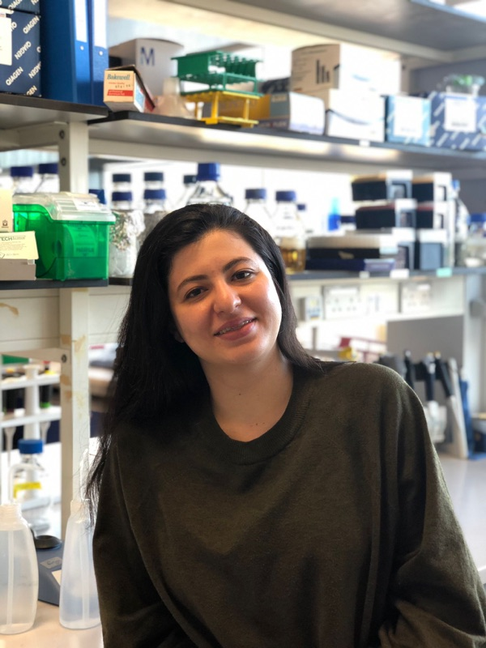

Dr Deniz Ozbilek
Postdoc
My research focuses on mapping the genotype-phenotype-fitness relationship of RNA polymerase in E. coli under fluctuating environmental conditions. By integrating structural, transcriptomic, and fitness-level analyses, we aim to uncover how mutations in RNA polymerase influence adaptation and compensate for resistance-associated fitness costs.